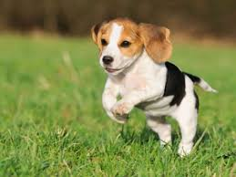
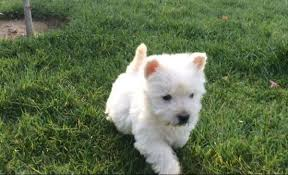

Conociendo a tu hermos@ compañer@
|  |
Beagle Son perros muy sociables, cariñosos y leales, perfectos para vivir en familia y, con el adiestramiento adecuado, para estar con niños. Están llenos de energía y son muy traviesos y juguetones. El Beagle puede vivir en un departamento si se le proporciona cada día el ejercicio que necesita. El origen cazador de los Beagles también hace que en ocasiones se comporten de forma impulsiva y salgan corriendo inesperadamente. No te sorprendas si tu Beagle vuelve de sus excursiones con algún que otro “obsequio” para tí. |
|
Golden Retriever Es templado, inteligente, cariñoso, juguetón, amable con los niños y tiende a llevarse bien con otras mascotas y extraños. Estos perros están ansiosos por complacer; lo que probablemente explica porque responden tan bien al entrenamiento de obediencia y son tan populares como perros de servicio. También les gusta trabajar, ya sea que involucre caza de pájaros o traer las pantuflas de sus dueños. No tienen instintos de guardián así es que no cuentes con él para ser vigía; sin embargo algunos te harán saber si un extraño se acerca. |
|
|
Pug Son los favoritos de las familias debido a su temperamento, personalidad juguetona, su disposición amorosa y abierta. También son conocidos por su comportamiento encantador y travieso. Su personalidad los convierte en una mascota ideal para familias con niños. Los Pug son felices viviendo en la ciudad, no son exigentes con las personas y son buenos para vivir como mascota única o acomodarse a un grupo de mascotas. Prefieren estar echados en el sillón y aman la comida, lo que los predispone a ser obesos. Son juguetones y animados, disfrutan de caminatas diarias o ejercicio moderado, pero no toleran el clima cálido. Les encanta complacer a su gente y son fáciles de entrenar; sin embargo son una raza sensible por lo que los propietarios deben elegir sus tácticas de entrenamiento con cuidado. |
|
|  |
West Highland White Terrier Es sociable y buen compañero de juego para niños y otros perros; incluso se lleva bien con los gatos. No es recomendable si tienes conejos, cuyes o cualquier otro tipo de mamífero roedor ya que le recuerda su instinto cazador. No demanda mucha atención, es independiente y seguro por lo que puede estar varias horas solo. Se adapta fácilmente a todo tipo de familia y mientras cuente con el ejercicio necesario y horas de juego puede vivir tanto en casa como en departamento. El West Highland White Terrier es inteligente y aprende rápido, es fácil de entrenar con refuerzo positivo y constancia. |